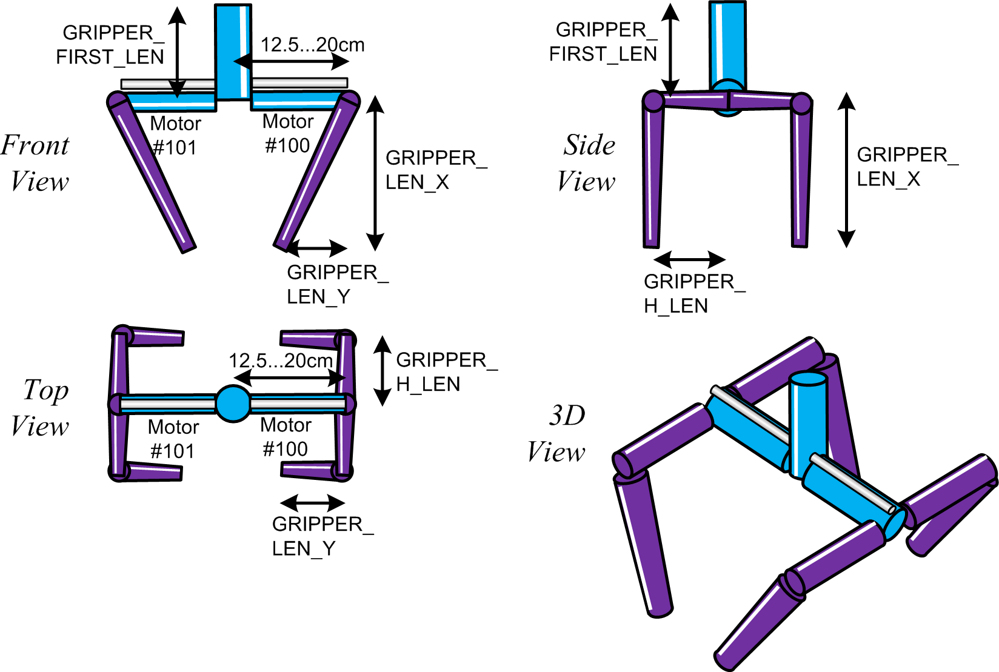
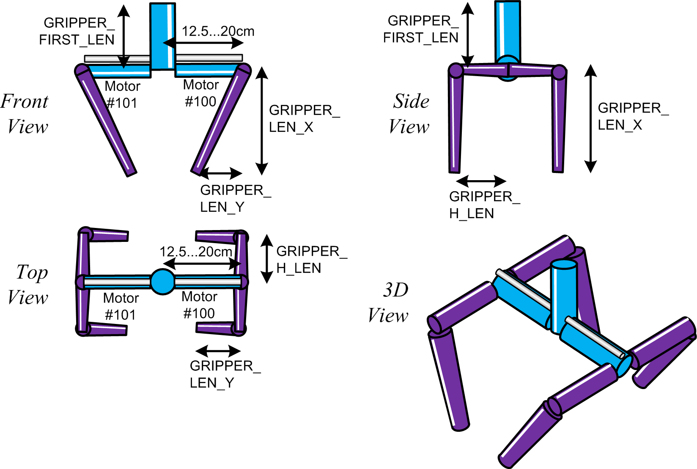

java.lang.Object
kin.execmodels.GripperModel
manipulators.LinearGripper
- All Implemented Interfaces:
Gripper
public class LinearGripper extends GripperModel
A simple gripper with two symmetric linear motors.


-
Constructor Summary
Constructors Constructor Description LinearGripper() -
Method Summary
Modifier and Type Method Description voidcreate()Create the grippers's simulation model.voidcreationCompleted(ManipulatorModel manipulatorModel)The creation of the complete manipulator has been completed.java.lang.StringgetDescription()The gripper's description.ComponentModelgetGripperModel()Get the static 'root' component of the gripper.voidsetGripper(double value)Open/close the gripper to a certain value.
-
Constructor Details
-
LinearGripper
public LinearGripper()
-
-
Method Details
-
create
public void create()Description copied from class:GripperModelCreate the grippers's simulation model.- Specified by:
createin classGripperModel
-
creationCompleted
Description copied from class:GripperModelThe creation of the complete manipulator has been completed. In particular, the manipulator as the root for all dynamic components is now available. At this moment, the gripper can call {ManipulatorModel#getServo(int)} and {ManipulatorModel#getLinearMotor(int)}.- Specified by:
creationCompletedin classGripperModel- Parameters:
manipulatorModel- the complete robot
-
getGripperModel
Description copied from class:GripperModelGet the static 'root' component of the gripper.- Specified by:
getGripperModelin classGripperModel- Returns:
- static simulation component
-
getDescription
public java.lang.String getDescription()Description copied from interface:GripperThe gripper's description.- Returns:
- description
-
setGripper
public void setGripper(double value)Description copied from interface:GripperOpen/close the gripper to a certain value. The value is in the range of 0.0 (fully closed) to 1.0 (fully opened).- Parameters:
value- open/close value
-